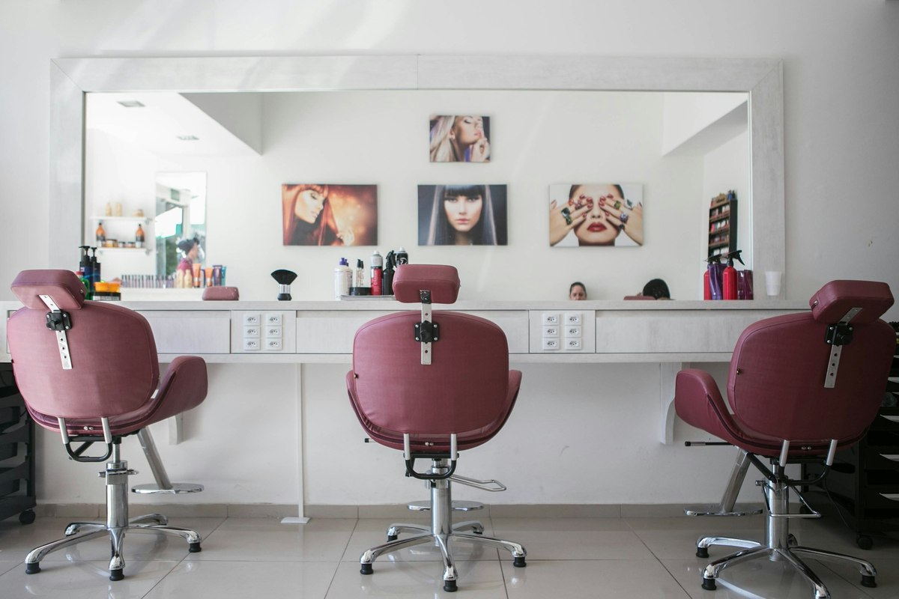

«Hola, ¿cuánto cuesta?»
Te escriben cuando has cerrado. Respondes al día siguiente. La conversación ya se ha enfriado.
MARKETING PARA NEGOCIOS CON CITA
Conectamos tu web, Google y WhatsApp para que el interés se convierta en una cita.
Y lo medimos. Así de claro.
Facilitar la reserva a quienes escriben después de cerrar.
Datos ilustrativos. Ningún resultado está garantizado.
Alguien busca tu servicio cerca. Tu ficha y tus reseñas le ayudan a elegir.
Ver las piezasA veces no necesitas que te escriba más gente. Necesitas que sea más fácil dar el siguiente paso.
Te escriben cuando has cerrado. Respondes al día siguiente. La conversación ya se ha enfriado.
Le gustó tu servicio, pero nadie le recordó que tocaba volver. La próxima cita se queda en el aire.
Se ve bien. Pero no sabes cuántas citas trae ni dónde se pierde la gente que la visita.
Así podría funcionar en un negocio como el tuyo. Explora cada paso.

«Hola, ¿cuánto cuesta una limpieza facial?»
La consulta llega a las 23:04. El primer paso es recogerla y orientar.«Fisioterapia cerca de mí.»
Una ficha completa conecta esa búsqueda con la información de tu clínica.Recorridos de demostración. Las fotografías son ilustrativas y no representan clientes de Ratio.
Desde que alguien te encuentra hasta que vuelve a reservar. Diseñamos el recorrido completo para tu negocio.
Elige una hora de ejemplo.
Hora de ejemplo: 10:00.
Es una demostración. No crea una cita real.
Diseño a medida, carga rápida y una reserva visible. Si ya tienes una herramienta, estudiamos cómo integrarla.
Información clara. Horarios al día.
Servicios · Fotos · ReseñasUna ficha que ayuda a elegir.
Una web que permite reservar.
Una forma sencilla de pedir reseñas.
Trabajamos tu Perfil de Empresa, sus servicios y el camino a la reserva. Sin prometer posiciones que nadie puede garantizar.
Tu tono. Tu forma de atender.
Respuestas para las preguntas habituales y recordatorios acordados contigo. Las conversaciones que necesitan a una persona llegan a ti.
Tres números.
Una decisión concreta.
Una página al mes con los números, su contexto y el siguiente ajuste. El valor está en lo que hacemos con ellos.
Estética y peluquería : Fisioterapia y clínicas : Psicología : Coaches y academias
Un ratio es una relación. El nuestro conecta los mensajes que recibes con las citas que agendas.
Si hacen falta 4 mensajes para cerrar una cita, tu ratio es 4 : 1. Si cierras más citas con los mismos mensajes, esa relación mejora.
Explora un ejemplo con tus propios números.4 mensajes por cada cita.
Un cálculo orientativo, no una previsión. El panel real distingue el origen de cada cita.
Google, web e Instagram. Un vídeo de 3 minutos con las 3 cosas que cambiaríamos primero.
Conocemos tu agenda, tus clientes y tu forma de atender. Te contamos qué haríamos y cuánto cuesta.
Diseñamos, construimos y probamos tu sistema. El plazo empieza al recibir la información acordada.
Recibes tu panel y una decisión concreta. Cuidamos el sistema y mejoramos lo que haga falta.
Empieza por conocer tu punto de partida.
Cuando encaje, construimos el sistema.
Web, Google, WhatsApp y medición. Juntos.
Para los 3 primeros proyectos, a cambio de documentar el caso con cifras reales y con tu permiso.
Para que te vean antes de escribirte.
3 mejoras prioritarias en un vídeo.
Te sirve aunque no trabajemos juntos.
La disponibilidad de la tarifa fundador se confirma en la propuesta. Los impuestos aplicables, las licencias externas y el consumo de WhatsApp, si se necesitan, se detallan antes de contratar.
Foto: Giorgio Galeotti · Wikimedia Commons · CC BY-SA 4.0 · Redimensionada.
Soy Nicolás, de Basauri. Diseño, desarrollo y hago marketing.
La misma persona que escucha lo que necesitas es la que construye tu sistema y la que te contesta después. Conocemos tu negocio de cerca y trabajamos con una dirección clara.
Estas son las que solemos resolver primero.
Primero revisamos el que ya usas, como Booksy o Treatwell, y sus opciones de integración. Si no tienes ninguno, elegimos contigo una solución adecuada. Cualquier licencia necesaria se presupuesta antes.
El Sistema Ratio no necesita que salgas en vídeo. Si añades Contenido, podemos trabajar con tu equipo, tu espacio y tu servicio. Acordamos los formatos contigo.
La auditoría se entrega en 48 horas. Para el montaje planteamos 14 días desde que recibimos la información y los accesos acordados. Si tu caso requiere algo especial, lo fijamos en la propuesta.
El compromiso inicial es de 3 meses. Después, mes a mes, con 30 días de aviso. Tu web, tu dominio y tus contactos siguen siendo tuyos. Los términos concretos quedan por escrito antes de empezar.
Redactamos las respuestas contigo, con el tono de tu negocio. Automatizamos lo habitual y dejamos la atención personal para lo que la necesita.
Las visitas y las sesiones de grabación se realizan en Bizkaia. Podemos trabajar en remoto con otros negocios si el proyecto encaja.
Hay un enfoque específico para captar propietarios y conseguir visitas de valoración. Selecciona «Inmobiliaria» en la solicitud y revisaremos ese recorrido.
Tu Google, tu web, tu Instagram.
Un vídeo de 3 minutos. Tres mejoras concretas.
Kaixo. El primer paso puede ser así de sencillo.
¿Prefieres escribir directamente?WhatsApp · 665 015 804